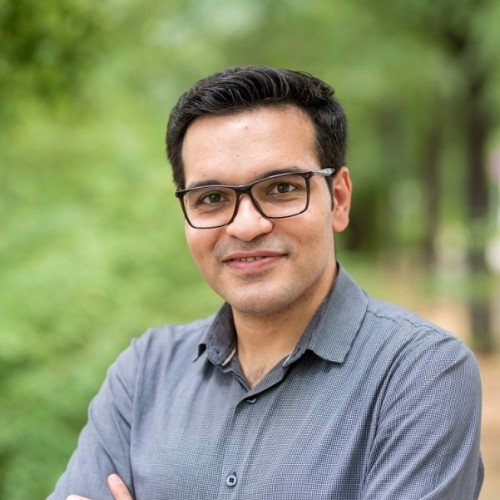

Senior Research Scientist, DFKI/PhD, TU Berlin/Berlin, Germany

I'm a Senior Research Scientist at German Research Centre for Artificial Intelligence (DFKI) at the Speech & Language Technology group in Berlin, where my work focuses on evaluating large language models for quality and factual accuracy. I got my PhD in Computer Science at TU Berlin, Advised by Prof. Sebastian Möller. I spent eight-plus years working across fake news detection, hate speech detection, plagiarism detection and argument mining.
Senior Research Scientist
DFKI, Speech & Language Technology group · Berlin
Visiting Researcher
Universitat Politècnica de València
Research Scientist
Technische Universität Berlin, Quality & Usability Lab
NLP Specialist
ICT Research Center, ACECR
Guest Lecturer, Data Mining
University of Science and Culture
PhD, Computer Engineering
Technische Universität Berlin, Germany · advised by Prof. Sebastian Möller
MSc, Information Technology
Amirkabir University of Technology, Iran
BSc, Information Technology
Shahrood University of Technology, Iran
From Construction to Application: Advancing Argument Mining with the Large-Scale KIALOPRIME Dataset
COMMA 2024Sahitaj, Ruiz-Dolz, Sahitaj, Nizamoglu, Schmitt, Mohtaj, Möller
Augmented Political Leaning Detection: Leveraging Parliamentary Speeches for Classifying News Articles
CPSS @ KONVENSJakob, Wenzel, Mohtaj, Schmitt
On the Importance of Word Embedding in Automated Harmful Information Detection
TSD 2022Mohtaj, Möller · Springer LNCS
Overview of the GermEval 2022 Shared Task on Text Complexity Assessment of German Text
GermEval @ KONVENSMohtaj, Naderi, Möller
The Impact of Pre-processing on the Performance of Automated Fake News Detection
CLEF 2022Mohtaj, Möller
Using External Knowledge Bases and Coreference Resolution for Detecting Check-Worthy Statements
CLEF 2019Mohtaj, Himmelsbach, Woloszyn, Möller
Automated Text Readability Assessment for German Language: A Quality of Experience Approach
QoMEX 2019Naderi, Mohtaj, Karan, Möller
Parsivar: A Language Processing Toolkit for Persian
LREC 2018Mohtaj, Roshanfekr, Zafarian, Asghari
Algorithms and Corpora for Persian Plagiarism Detection: Overview of PAN at FIRE 2016
FIRE 2016Asghari, Mohtaj, Fatemi, Faili, Rosso, Potthast
Cited by 400+ · full list on Google Scholar
Feature-extraction and character-based LSTM models built for the HASOC 2020/2021 shared tasks, identifying hate speech and offensive content across English, German, and Hindi social media text.
A 2,446-instance Persian paraphrase corpus collected via implicit crowdsourcing from a plagiarism-detection system's user submissions, published at LREC 2022.
A shared-task submission scoring how similar pairs of news articles are across 18 language combinations — cross-lingual groundwork for later fact- and news-evaluation work.
A configurable web crawler built with the TU Berlin NLP group to collect open text corpora for downstream NLP research and dataset construction.